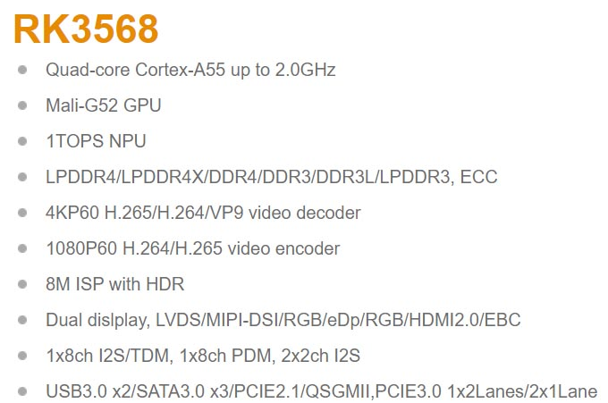

RaspberryPi 4B
Broadcom BCM2711, Quad core Cortex-A72 (ARM v8) 64-bit SoC @ 1.8GH

https://www.raspberrypi.com/products/raspberry-pi-4-model-b/specifications/
Architecture: aarch64
CPU op-mode(s): 32-bit, 64-bit
Byte Order: Little Endian
CPU(s): 4
On-line CPU(s) list: 0-3
Vendor ID: ARM
Model name: Cortex-A72
Model: 3
Thread(s) per core: 1
Core(s) per cluster: 4
Socket(s): -
Cluster(s): 1
Stepping: r0p3
CPU(s) scaling MHz: 40%
CPU max MHz: 1500.0000
CPU min MHz: 600.0000
BogoMIPS: 108.00
Flags: fp asimd evtstrm crc32 cpuid
Caches (sum of all):
L1d: 128 KiB (4 instances)
L1i: 192 KiB (4 instances)
L2: 1 MiB (1 instance)
Ubuntu22, GCC11, ldd (Ubuntu GLIBC 2.35-0ubuntu3.9) 2.35
MultiCore SingleCore
Workload Name (iter/s) (iter/s) Scaling
----------------------------------------------- ---------- ---------- ----------
cjpeg-rose7-preset 232.56 62.50 3.72
core 2.40 0.60 4.00
linear_alg-mid-100x100-sp 231.48 60.31 3.84
loops-all-mid-10k-sp 3.97 2.10 1.89
nnet_test 10.01 3.02 3.31
parser-125k 8.62 9.17 0.94
radix2-big-64k 94.93 216.17 0.44
sha-test 384.62 109.89 3.50
zip-test 129.03 38.46 3.35
MARK RESULTS TABLE
Mark Name MultiCore SingleCore Scaling
----------------------------------------------- ---------- ---------- ----------
CoreMark-PRO 4486.36 1958.70 2.29
NanoPi R5S
Rockchip RK3568B2, Quad-core ARM Cortex-A55 CPU, up to 2.0GHz
https://wiki.friendlyelec.com/wiki/index.php/NanoPi_R5S/zh
Architecture: aarch64
CPU op-mode(s): 32-bit, 64-bit
Byte Order: Little Endian
CPU(s): 4
On-line CPU(s) list: 0-3
Vendor ID: ARM
Model name: Cortex-A55
Model: 0
Thread(s) per core: 1
Core(s) per cluster: 4
Socket(s): -
Cluster(s): 1
Stepping: r2p0
CPU(s) scaling MHz: 71%
CPU max MHz: 1992.0000
CPU min MHz: 408.0000
BogoMIPS: 48.00
Flags: fp asimd evtstrm aes pmull sha1 sha2 crc32 atomics fphp asimdhp cpuid asimdrdm lrcpc dcpop asimddp
Caches (sum of all):
L1d: 128 KiB (4 instances)
L1i: 128 KiB (4 instances)
L2: 512 KiB (1 instance)
Ubuntu22, GCC11, ldd (Ubuntu GLIBC 2.35-0ubuntu3.9) 2.35
MultiCore SingleCore
Workload Name (iter/s) (iter/s) Scaling
----------------------------------------------- ---------- ---------- ----------
cjpeg-rose7-preset 222.22 61.35 3.62
core 1.97 0.50 3.94
linear_alg-mid-100x100-sp 100.20 26.34 3.80
loops-all-mid-10k-sp 2.50 0.99 2.53
nnet_test 6.15 1.86 3.31
parser-125k 13.29 8.93 1.49
radix2-big-64k 91.26 71.52 1.28
sha-test 333.33 106.38 3.13
zip-test 102.56 29.41 3.49
MARK RESULTS TABLE
Mark Name MultiCore SingleCore Scaling
----------------------------------------------- ---------- ---------- ----------
CoreMark-PRO 3588.78 1298.55 2.76

About Links
https://www.microcenter.com/product/637834/raspberry-pi-4-model-b
https://wiki.friendlyelec.com/wiki/index.php/NanoPi_R5S
https://www.wikihow.com/Main-Page
ISA
https://zh.wikipedia.org/wiki/X86
https://zh.wikipedia.org/wiki/ARM架构
https://zh.wikipedia.org/wiki/MIPS架构
https://zh.wikipedia.org/wiki/RISC-V